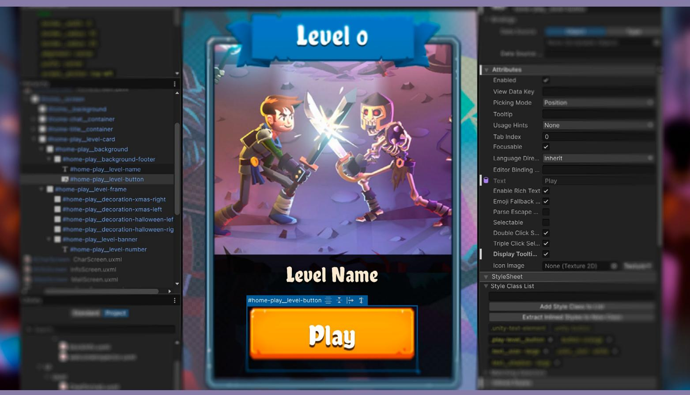
| Introduction 9 |
|---|
| Contributors 10 |
| Install UI Toolkit and sample projects 11 |
| The official UI Toolkit samples 12 |
| UI Toolkit Sample – Dragon Crashers 12 |
| QuizU 13 |
| Introduction to UI Toolkit 14 |
| UI Assets 15 |
| UI Builder 16 |
| Graphic and font assets preparation 17 |
| Bitmap images 17 |
| Sprites 18 |
| Render Texture asset 19 |
| 2D PSD Importer 20 |
| Vector images 22 |
| Fonts 23 |
| Texture packers 23 |
| Sprite atlas 23 |
| Dynamic atlas 24 |
| UI Builder 26 |
| Canvas background 27 |
| Viewport settings 28 |
| Layouts 29 |
| Core runtime components 31 |
| Responsive layouts: Flexbox 31 |
| Visual elements 33 |
|---|
| Positioning visual elements 33 |
| Size settings 35 |
| Flex settings 36 |
| Align settings 38 |
| Margin and Padding 39 |
| Background and images 40 |
| Variable or fixed measuring units 41 |
| Overridden properties in UI Builder 42 |
| UXML as templates 43 |
| More resources 43 |
| Styling 44 |
| USS selectors 45 |
| Converting existing inline styles to selectors 45 |
| Creating new selectors 47 |
| Selectors assigned to elements 49 |
| Editing selectors 50 |
| Overriding styles 51 |
| USS variables 52 |
| USS transitions animations 53 |
| Swapping styles on demand 55 |
| Themes 56 |
| Naming conventions 59 |
| Text 62 |
| Source font file 62 |
| Font asset settings 63 |
| Font asset variant 65 |
| Rich text 65 |
|---|
| Gradients 66 |
| Sprite asset and emojis 67 |
| Text Style Sheets 70 |
| Data binding 72 |
| UI that reflects your game data 72 |
| Enter runtime data binding 74 |
| Data binding concepts 75 |
| Preparing a data source 75 |
| Using the CreateProperty attribute 75 |
| Data sources and paths 76 |
| Inheriting data sources 78 |
| Binding modes 79 |
| Example: Data binding a health bar 80 |
| Preparing the data source 81 |
| Data binding in UI Builder/UXML 82 |
| Set up data binding in C# 84 |
| Unresolved data bindings workflow 86 |
| Type converters 88 |
| Example: Converting a value to a color 88 |
| HealthDataConverter setup 88 |
| Using the HeathBarWithConverter 90 |
| Applying DataConverters in UI Builder 91 |
| Best practices 92 |
| Example: Binding a list to a ListView 93 |
| Setting up the list and templates 94 |
| Completing the binding at runtime 95 |
| Optimizing data binding 96 |
|---|
| Managing value types 96 |
| Minimizing overhead 96 |
| Using update triggers 97 |
| Versioning and change tracking 97 |
| Localization 98 |
| How it works 99 |
| Localization setup 100 |
| Using the Localization API 104 |
| Selecting a Locale 104 |
| Using SetBinding 105 |
| Listening for Locale changes 106 |
| Working with String Tables 107 |
| Importing and exporting string data 107 |
| CSV files 107 |
| Google Sheets synchronization 108 |
| Using Smart Strings 110 |
| Setting up a Smart String in your script 110 |
| Understanding placeholders 111 |
| String pre-processing 113 |
| GetLocalizedString 113 |
| Using the StringChanged event 114 |
| Dynamic UI controls 114 |
| Localizing assets 117 |
| Setting up asset localization 117 |
| Asset Tables versus String Tables 119 |
| Common localized assets in UI Toolkit 119 |
| Localization in the Dragon Crashers sample 120 |
| Custom controls 122 | |
|---|---|
| The UxmlElement attribute 122 | |
| The UxmlAttribute attribute 124 | |
| Example: A custom slide toggle control 126 | |
| Defining the custom control 126 | |
| Using the slide toggle 129 | |
| Creating more custom controls 131 | |
| Optimizing performance 132 | |
| Update mechanisms 133 | |
| Batching elements 134 | |
| Vertex buffers 134 | |
| Uber shader and eight-texture limit 136 | |
| Dynamic texture atlases 138 | |
| Masking 140 | |
| Animations and transitions 141 | |
| Runtime data binding 143 | |
| Property bags and source generation 143 | |
| Change Tracking 143 | |
| Showing and hiding elements 145 | |
| Overdraw 145 | |
| Memory management 146 | |
| Profiling tools 147 | |
| Unity 6 performance enhancements 148 | |
| Resources for advanced developers and artists 149 |
The best user interface is the one you don't notice.
User interface (UI) is a critical part of any game. Done well, it's invisible and carefully woven into your application. If done poorly, however, it can frustrate users and detract from the gameplay experience.
A solid UI is an extension of a game's visual identity. Modern audiences crave refined, intuitive UI that seamlessly integrate with your application. Whether it's displaying a character's vital statistics or the game world's economy, the interface is your players' gateway to key information.
As UIs become more sophisticated, so does the artistry behind them. UI design mainly depends on two types of specialists:
UI artists: They master the fundamentals of design, color, shape, typography, and layout. UI artists design for the target audience of the game world. Their eye for detail motivates them to create "pixel perfect" UI.
UX designers: They research user behavior and the broader needs of the end user. UX designers control how someone interacts with a digital product. They build navigation flows with the intent of making the experience as intuitive and delightful as possible.
These roles work closely together, alongside other 2D or 3D artists and designers. It's through this collaboration that stronger, more effective UIs come about.

Another key role is that of the UI programmer, who will team up closely with the previous roles. They will work with a chosen tech stack, establish a process or pipeline to ingest all of the UI design into functional interfaces, wire gameplay code to UI, and feed data back into the game systems from UI.
In our previous e-book, User interface design and implementation in Unity, we demonstrated how UI artists and designers can build interfaces in Unity with its two UI systems: Unity UI, the older GameObject-based system, and the newer UI Toolkit. We also covered how studios design UI from scratch and import art into a game. This guide was based on Unity 2021 LTS.
In this new e-book, we focus on UI Toolkit in Unity 6 that is tailored for maximum performance and reusability, with web-inspired workflows. UI designers with web experience will find it intuitive, while UI programmers can gain a clear understanding of UI Toolkit's capabilities for game creation. This guide's modular structure allows sections to be read in any order, making it a useful reference for learning UI Toolkit.
Let's begin.
The main author and creator of this guide and the two UI Toolkit samples is Wilmer Lin, a veteran 3D and visual effects artist, developer, and educator.
Major contributions to this guide and the sample UI Toolkit Sample – Dragon Crashers were also provided by Eduardo Oriz, a senior content marketing manager at Unity and graphic designer.
Another key contributor to this guide and the sample QuizU is Thomas Krogh-Jacobsen, a senior manager in content marketing management at Unity.
Camil Bouzidi, software developer Martin Côté, senior graphic developer Hugo Bourret-Desmarais, senior software developer Benoit Dupuis, senior technical product manager Karl Jones, senior software engineer Antoine Lassauzay, staff software developer Martin Paradis, staff software developer Stefania Valoroso, manager, product designer
UI Toolkit is integrated into the core Unity 6 platform, which means that you don't need to install a separate package to use it with version Unity 6 and later. Starting a new project from one of the templates available will be sufficient to be able to follow the content of this guide.
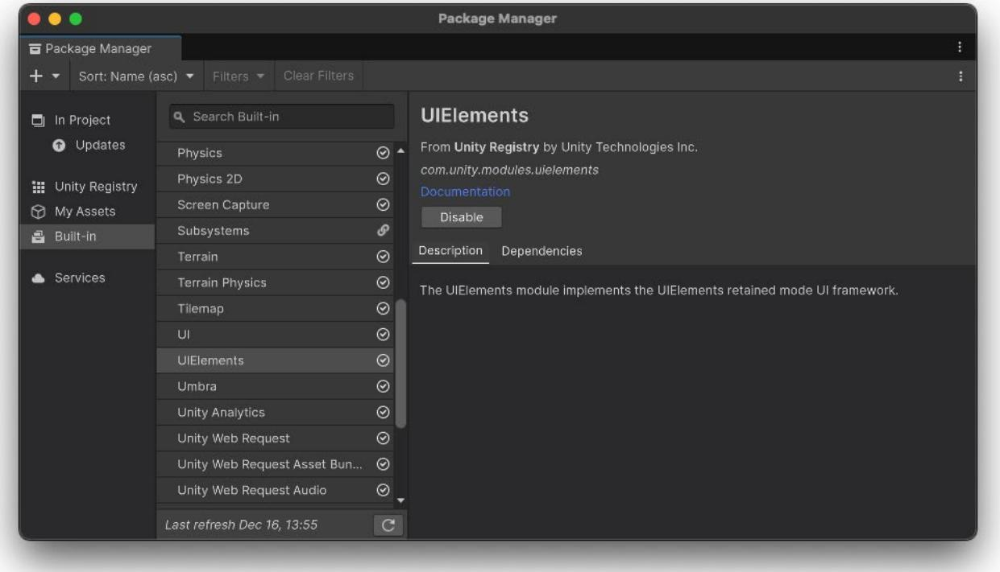
UIElements is the namespace for UI Toolkit, UI Builder and their features, all of which are now included in Unity 6.
This e-book primarily uses the following samples to show and explain UI Toolkit capabilities in Unity projects. Each sample is available to download for free from the Unity Asset Store.
This demo uses the latest UI Toolkit workflow at runtime for a full-featured interface, including a front-end menu system, over a slice of the 2D project Dragon Crashers, a mini-RPG.
This demo is not meant for beginners. It was created for experienced Unity developers who have the capabilities to look at the UI structure and navigate the demo to observe specific implementations. This demo was originally released for Unity 2021 LTS and has since been updated to Unity 6. Here are some of the topics you can learn more about in the demo:
You can find a video walkthrough of the sample and download it from the Asset Store.

The home screen can be displayed in landscape and portrait
The QuizU demo showcases an interactive quiz game built with Unity's UI Toolkit. Aimed at UI developers, this project highlights UI Toolkit workflows, event-driven architecture, and reusable design patterns for building modern game user interfaces. This demo shows how to:
| UQuery | container-1 container-2 slider-1 button-3 |
|
|---|---|---|
| UQuery provides a way to find specific visual elements within the visual tree hierarchy based on certain search criteria. This can include: · Name: Each element in the UI hierarchy can be assigned a unique name, serving as its identifier. UQuery allows you to search for these names when you need to reference specific UI elements. · USS class: USS (Unity Style Sheets) classes assign styles to your UI elements. These classes can be used as selectors in a UQuery, letting you find all elements of a specific class. (e.g. applying changes to a group of elements sharing the same class). |
button-I container-3 button-2 |
|
| · Element type: You can query for elements based on their type (such as Buttons, Labels, Images, etc. derived from VisualElement). For example, you can retrieve all the Button elements in your UI, and apply a specific interaction or styling to them. Queries can be combined to create more complex search criteria. |
Query Selector Choose a selector None Q Q |
|
| MORE-> | Query Q O Jiaual Clamant (classelama; author ) O Jliauall'lamant; (pama; "unity deagan" |
A screen shot from the QuizU UI Toolkit demo
Originally released for Unity 2022 LTS, QuizU has been updated with new features in Unity 6. The project now includes how-to demos on creating custom controls, setting up data binding, and implementing localization.
You can download the project from the Asset Store.
UI Toolkit offers significant advantages over the traditional Unity UI (also known as uGUI) and legacy IMGUI (for Editor tools) systems. It provides a more modern, flexible, and performanceoriented alternative that scales better for most projects. It can also support your whole production pipeline, handling both Editor tooling and runtime games or applications.
Some of its benefits compared to the legacy UI systems include:
UI Toolkit draws inspiration from web technologies, offering an advantage to developers familiar with web applications. For those new to markup languages like HTML/XML and
Cascading Style Sheets (CSS), it's a great opportunity to explore a powerful set of industrystandard tools.
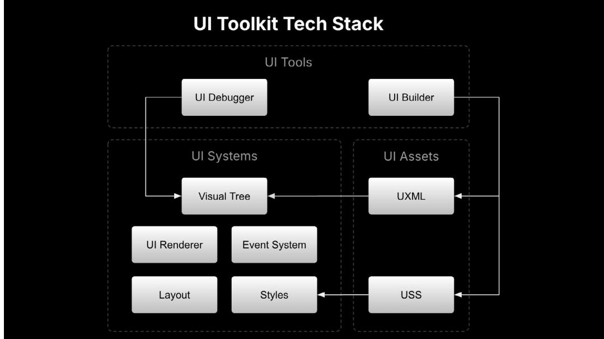
In essence, UI Toolkit interfaces consist of UXML and USS files to create layouts and styling by the UI Toolkit systems.
UI Assets, the building blocks for creating UI, consist of UXML and USS files. UXML (Unity XML) represents the content and structure of your UI, and is similar to markup languages like HTML and XML.
USS, inspired by Cascading Style Sheets (CSS), is used to define the appearance and styles of your UI content. Both UXML and USS are used throughout this guide.

Similarities between UI Toolkit and web technologies
UI Assets can either be authored as code from your IDE of choice, or visually, with the UI Builder which is part of the UI toolkit. The UI Builder interface allows artists and designers to edit and visualize the UI as it's being built.
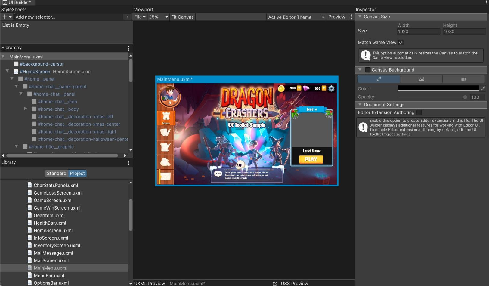
A lot of UI design happens outside of Unity in a Digital Content Creation (DCC) application. Depending on the style and preferences of the UI artist, designing the UI can take place in a raster drawing application like Adobe Photoshop or in a vector-based tool. Typically, every piece of UI graphic is exported as a lossless bitmap image with transparency, such as a PNG, and combined into a texture atlas with other UI elements for runtime efficiency.
If you work in a vector-based DCC application, you'll need to export vector graphics into a raster format in order to work with UI Toolkit. For more details, refer to the Vector images section.
Unity supports most common image file types, like PNG, BMP, TIF, TGA, JPG, and PSD. When you add files of these formats to your Assets folder, Unity will import them as Texture 2D assets for 3D projects or as Sprites for 2D projects. You can change the type in the Texture Type field within the Inspector once imported. UI Toolkit supports both formats for UI bitmap graphics.
Textures don't contain much more information besides the size and format of the image, but sprites have some additional properties that are used by UI Toolkit.

Sprites are textures prepared for 2D game development to be used by the Sprite Renderer component. 2D sprites in Unity can be tiled, rigged and skinned for animation, have custom geometry or include additional maps for 2D lighting. This section solely focuses on settings that are relevant to the UI Toolkit. For a deeper understanding of 2D graphics you can find more in the Unity 6 edition of the 2D art, animation, and lighting e-book that will soon be available athttps://unity.com/resources.
Most UI graphic assets will be rendered on screen space rather than following Unity's world scale (where one unit represents a cubic meter in 3D space). UI Toolkit manages the scale of these graphics, but the PPU (Pixels Per Unit) of sprites affects the size of the sprites in the UI. For example, if your sprite is meant to have 128 pixels of resolution per grid unit, set the PPU to 128.
The Sprite Editor provides tools for modifying your graphics, such as cropping with the blue handles or slicing with the green handles. These tools allow you to make the graphic tileable or use the 9-slice technique, a common way to create scalable elements.
Sprites are 2D textures mapped onto flat, rectangular 3D meshes. By default, when imported, they use the setting Mesh Type: Tight. This setting adjusts the mesh to closely follow the outline of the opaque (non-transparent) pixels of the sprite. This improves performance by reducing overdraw, which happens when the GPU draws the same pixel more than once within a single frame, due to transparent overlapping areas. You can manually adjust and optimize this mesh in the Sprite Editor under the Outline section.
Sprite Modes is a useful feature that you can select from the Inspector of a sprite asset. It provides the following modes:

Render textures are snapshots of a camera view in a texture, updated every frame. They can be created via Assets < Create < Rendering and referenced from a Camera component in the Output menu. You can then use these textures in the UI Toolkit to display elements such as mini-maps, character selection screens, or any other in-game visuals that need to be integrated into the UI.
Examples of render textures in UI Toolkit Sample: Dragon Crashers include the character preview in the level meter and the particle effects rendered over the UI buttons.
The opposite use case is also possible, where you want the UI to be displayed within a game element. For example, imagine a 3D computer model in your application displaying a functional interface made in UI Toolkit. You can render the UI Toolkit interface to a render texture, assign it in the Panel Settings and Camera, and then apply it to a material of the 3D model.

The Render Texture settings and simple tests
Just be aware that render textures are expensive. Use them sparingly and be sure to profile your project to optimize performance. For full screen interfaces without other active gameplay elements, adding extra effects this way is unlikely to pose major performance issues.
Unity imports PSD (or Adobe Photoshop files) as flattened textures unless your project has the 2D PSD Importer package installed. PSD files are generally used for storing multiple images in layers in one single file. Most DCC tools support exporting to this format.

Creating the UI assets in Photoshop: Normally each element has its own layer, group, or is a smart object. Smart objects allow you to work on each element in isolation and preserve the original resolution of the element, even if resized later in the main document.
PSD files simplify workflows by allowing direct import into Unity, avoiding the need for you to export each layer as individual files and repeat the process whenever changes are needed.
After installing the 2D PSD Importer package from the Package manager, ensure the PSD files are imported from the Inspector.
| Inspector | T | |
|---|---|---|
| Fei_Cel_group (Texture 2D) Import Settings | 3 T | |
| Importer √ UnityEditor.TextureImporter (Default) | Open | |
| UnityEditor.U2D.PSD.PSDImporterOverride | ||
| Texture Type | Sprite (2D and UI) |
Select the PSD Importer in the Inspector to see options for handling the file.
When working with UI assets, deselect the Use as Rig option in the Inspector under Character Rig. That setting is only relevant for 2D character skeletal animation and is unnecessary for UI elements. You should also find options for importing layers (e.g., discarding hidden layers, grouping objects by layer, etc.)

Switch to the PSD Importer to give yourself more import options.
The sprites in the Project view generated from the PSD are usable as normal sprites. You can slice them, change the outline, or modify the Pixels Per Unit (PPU) from the Sprite Editor just as you would with regular Sprite assets.
Unity will automatically refresh the sprites included in the PSD file every time you save it. This allows you to make a quick placeholder and iterate on it while viewing changes in the Game view. This can be a great time saver and improve the quality of the work by letting you see it in context without swapping files or needing support from a fellow developer in the team.
Although the vector format support is still in development at the time of writing, it's available as an option for background images in the UI Builder. However, raster images (sprites and textures) are currently the recommended image format for UI Toolkit.
If you want to test this functionality, you will need the Vector Graphics package which is still in preview and hidden from the Package Manager by default. Follow the steps in the documentation to install it. This package includes a setting for defining the tessellation level when converting vector graphics into polygons. For the Generated Asset Type setting, choose UI Toolkit Vector Image to be able to use it in UI Toolkit.
| C Inspector | ಗ | |
|---|---|---|
| Car (Vector Image) Import Settings (SVG Importer) | Open | |
| Gradient Resolution | 64 | |
| Pivot | Center | > |
| Generate Physics Shape | ||
| Viewport Options | Don't Preserve Viewport | > |
| Tessellation Settings Target Resolution Zoom Factor Generated Asset Type |
Basic Vector Sprite Textured Sprite Texture2D V UI Toolkit Vector Image UI SVGlmage |
D |
| Asset PostProcessors 2 |
||
| ► UnityEditor.U2D.PSD.PSDImporterAssetPostProcessor | ||
| UnityEditor.ShaderGraph.ShaderGraphAssetPostProcessor A |
||
| > UnityEditor.U2D.Animation.SpritePostProcess | ||
With the Vector Graphics package you can test using SVG images for your game or UI in a limited capacity.
Currently, SVG files are tessellated into polygons when rendering, which limits the benefits of vector images. You may notice polygonal edges when scaling up, rather than the smooth curved edges typical of vector images. At the time of writing, anti-aliasing is not yet enabled for UI Toolkit.
The finalized version of vector support is expected to be able to support real vector shapes natively, eliminating the need for a separate Vector Graphics package.

UI Toolkit supports both Font and FontAsset:
Combining 2D graphics into the same texture is a common optimization technique to reduce draw calls and improve memory usage. UI Toolkit supports two current atlasing systems.

A typical game UI atlas from the UI Toolkit Sample – Dragon Crashers
Sprite Atlas is Unity's atlasing tool for 2D game development and sprites, but you can also use it for UI graphics. It automatically packs assets in the same project folder, creating an atlas for the sprites, and normal and mask maps. It also supports platform-specific variants and has an API for advanced control. Sprite Atlas is commonly used in the Editor to pack assets but not at runtime.


Dynamic atlas generated from the Unity Editor and shown in the Texture Atlas Viewer; the atlas grows horizontally and vertically in multiples of 2 fitting in the max allowed texture size
When UI graphics are not packed with Sprite Atlas, they are automatically packed with the dynamic atlas feature in UI Toolkit during a pre-pass.
The referenced images within a visual element will be atlased according to the criteria defined in the Panel Settings of the UI Document. For example, you can define the minimum or maximum texture sizes to be packed or filter images based on other properties. You can preview generated atlases in the Texture Atlas Viewer within the UI Toolkit Debugger.
The dynamic atlas tool works both at runtime and in the Editor, making it useful for UI elements that are dynamically generated, like a player's inventory.
Common good practices for your graphics include:

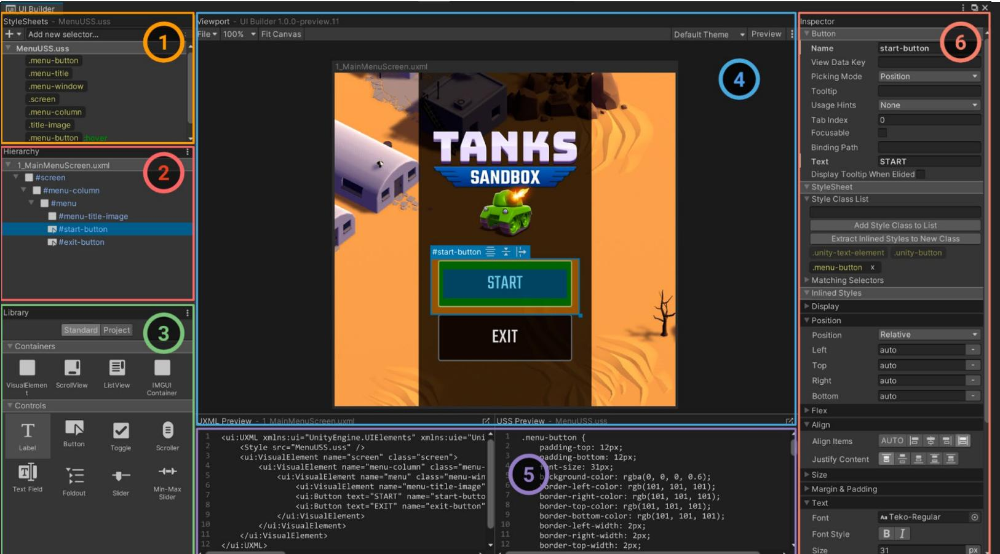
UI Builder is accessible from the Window/UI Toolkit/UI Builder menu.
UI Builder enables you to create, visualize and modify UXML and USS files in a visual interface that's integrated into the main Editor. Let's look at the key features of UI Builder:
In UI Builder, save your changes from the Viewport menu (File > Save). This saves all open UXML and USS files.
Unlike Unity UI, the game can run in the Editor while you actively make changes in UI Toolkit. Look for the asterisk * next to the file name in the UI Builder's Canvas header; this indicates unsaved changes.
Enabling the Canvas background can help you visualize your element styling over a color or background image. Select the UXML file in the Hierarchy pane and then choose a Canvas background that approximates the final UI interface to judge style changes in context.
The Canvas background provides a few different options:
| Viewport | Inspector | ||||||||||
|---|---|---|---|---|---|---|---|---|---|---|---|
| File ▼ 100% | V | Fit Canvas | Active Editor Theme | > | Preview | V Canvas Size |
|||||
| NewUXMLTemplate.uxml | Size Match Game View |
Width 350 |
Height 450 |
||||||||
| Canvas Background 7 |
|||||||||||
| N | R | 00 | |||||||||
| B None (Texture 2D) Image |
|||||||||||
| Opacity | 100 | ||||||||||
| Scale Mode | 대 리 대 | ||||||||||
| Fit Canvas to Image | |||||||||||
| Document Settings | |||||||||||
The Canvas of a new UXML document: Use the Color and Image options to adjust its appearance.
To navigate the work area, adjust the zoom level (between 25%–500%), or choose the Fit Canvas option which automatically adjusts the zoom according to the current screen real estate.
Use Preview to visualize the UI without accidentally editing the selected elements. When active, the Viewport can also show styles applied for specific mouse events (e.g., hovering, focusing).
| Tip: Match Game view and themes | |||||||||
|---|---|---|---|---|---|---|---|---|---|
To approximate a runtime UI, select the currently loaded UI Document (UXML) in the Hierarchy and check Match Game View. This sizes the Viewport to your project Reference Resolution. Remember that modifying this parameter does not affect the UI files themselves, only the visualization. From UI Builder you can also previsualize different themes used in your project, a feature that's covered later in the guide.

The UI Builder gives you all the tools you need to design a responsive layout.
This section covers the essential steps to creating layouts in UI Builder.
UI Builder is a WYSIWYG, designer-friendly tool to help create UXML and USS files efficiently and without writing code. While some teams may prefer creating UI directly in code, UI Builder empowers artists with creative control, enabling significant workflow improvements. When you make changes in the UI Builder, it generates the code for you, and everything you create in UI Builder can be implemented as code directly in UXML and USS.
The efficient set up of responsive layouts is a major benefit of using UI Toolkit and UI Builder. Such layouts are a necessary feature for any game that is targeting multiple platforms with different screen resolutions and ratios. This section covers the essential steps to creating layouts in UI Builder.
Below is a UXML file with its code displayed in the UXML Preview panel in UI Builder. In UI Builder, create the asset via File > New and then Save As.
| # Scene | Game | O Ul Builder | O Inspector | a : | |||||
|---|---|---|---|---|---|---|---|---|---|
| Game - Display 1 - Free Aspect | · Scale ● ● Scale ● 1x | Play Focused ▼ ¥ | 小 Stats Gizmos ▼ | B V UIDocument |
Static ▼ | ||||
| Tag Untagged ▼ ▼ Layer Ul | |||||||||
| ANNENO | J. Transform Position |
× 0 Y O |
� 花 : Z 0 |
||||||
| Rotation | × 0 Y O |
Z O | |||||||
| START | Scale | QX 1 Y 1 |
Z 1 | ||||||
| CREDITS | U √ Ul Document Panel Settings |
3 PanelSettings (Panel Se O | 0 ± : | ||||||
| Source Asset | @ MainMenu (Visual Tree ⊙ | ||||||||
| BUTTON | Sort Order | 0 | |||||||
| Add Component | |||||||||
| UXML Preview - MainMenu.uxml | G | ||||||||
| 1 | <engine UXML xmlns:xs="http://www.w3.org/201/XMLSchema-instance" xmlns:engine="UnityEngine.uIIElements" xmIns: | ||||||||
| C | - приведения морт пристирания пространия продавности в Поликовского собствования (дал |
By clicking the icon in the upper right corner of the Code Preview window you it will open it in your IDE.

In this example UXML code, you can see visual elements are represented as markup language that resembles HTML, such as starting with an open and ending bracket. For example, this is the syntax for a start button:
<engine:Button text="START" name="start-game__button" />
UI Toolkit elements won't appear in the Scene view. You can see the interface as you make it in UI Builder, but the Game view provides a more accurate preview at the target resolution. To render the UI in Game view, a GameObject must have a UI Document component with a Panel Settings asset and a Visual Tree asset (UXML), as seen in this screenshot:
| UI ✓ Ul Document | 3 F | ||
|---|---|---|---|
| Panel Settings | MainMenuPanelSettings (Panel Settings) | 0 | |
| Source Asset | MainMenu (Visual Tree Asset) | 0 | |
| Sort Order | O |
A UI Document Component defines what UXML will be displayed, and comes with a default Panel Settings asset. The Sort Order field determines how this document shows up in relation to other UI Documents using the same Panel Settings.
Add this component to a GameObject using the Add Component menu in the Inspector, or right-click in the Hierarchy and select UI Toolkit > UI Document, which will automatically assign the Panel Settings asset.
The Panel Settings asset defines how the UI Document component will be instantiated and visualized at runtime. It's possible to have multiple Panel Settings assets to enable different styles for the UIs. If your game includes HUD or a minimap, for instance, these special UIs could each have their own Panel Settings.
Create the asset via Assets > Create > UI Toolkit > Panel Settings Asset. It will be added to your root project folder, which can then be applied to a UI Document component on a GameObject.
UI Toolkit positions visual elements based on Yoga, an HTML/CSS layout engine that implements a subset of Flexbox. If you're unfamiliar with Yoga and Flexbox, this chapter will get you up to speed on the principles behind UI Toolkit's layout engine.

Decoupling logic and design: Programmers can connect the visual elements to the actual game logic while designers focus on defining the styles for them.
In UI Toolkit, the fundamental building blocks of each interface are their visual elements. A visual element is the base class of every UI Toolkit element (buttons, images, text, etc.) Think of them as UI Toolkit equivalents of GameObjects.
A UI Hierarchy of one or more visual elements is called a Visual Tree.
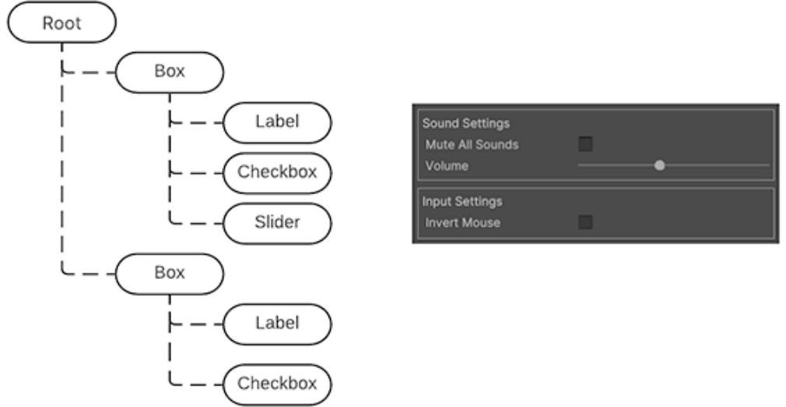
A simplified UI Hierarchy of a visual tree and how it looks on the right side
Combinations of multiple visual elements are stored in UXML files, which contains information related to the hierarchy, as well as its styling (if not using a StyleSheet or USS) and the layout of visual elements.
Before we dive deeper into UI Toolkit, you'll need to understand the fundamentals of Flexbox Layout, which can be demonstrated with basic visual elements in the UI Builder.
When mocking up a UI, approach each screen as a separate group of visual elements. Think about how to break the screens down into boxes that stack up horizontally or vertically and if they need child boxes to keep organizing the information.

In the below example, one large visual element could be a container, the menu bar and its elements on the left. Separate child visual elements to represent each of the buttons.
A good practice is to have a detailed mockup or wireframe (left) and identify and block out the elements to recreate the design in UI Toolkit (right).
UI Builder offers two position options for visual elements:
UI Toolkit handles any conflicts between the parent and child element (so a child element with a minimum width that is wider than its container, for instance, results in an overflow).
| V Position | |
|---|---|
Position Mode |
Relative |
| Offsets D |
✓ Relative |
| Absolute | |
| auto - |
|
| Left | Right |
| auto | auto - - |
| 0 | |
Position modes available for any visual element
— Absolute positioning: Here, the position of the visual element anchors to the parent container, similar to how Unity UI works with Canvases. Size rules or rules that affect the children elements still apply, but the element itself will overlay on top of the parent container ignoring flex settings like Grow, Shrink, or Margins.
Absolutely positioned elements can use the Left, Top, Right, and Bottom settings as anchors. For example, zero values for the Right and Bottom pin a Button to the bottomright of the parent container.
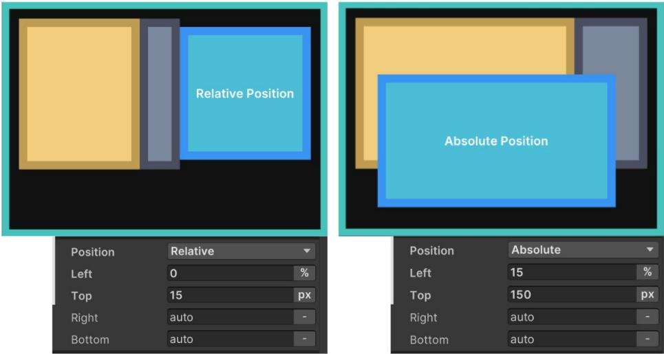
On the left, the blue visual element has a Relative position, with the parent element using Direction: Row as the Flex setting. On the right, the blue visual element uses Absolute position and ignores the parent element's Flexbox rules.
You'll probably want to use Relative positioning for elements that are permanently visible, have complex grouping, or contain a number of elements.
Absolute positioning can be useful for temporary UIs (like pop-up windows), decorative elements that don't interfere with the layout composition, or elements that follow the position of other in-game elements (like a character's health bar).
Remember that visual elements are simply containers. In Unity 6, their default Grow setting is set to 1, which means they will take all the available space in the container. Otherwise they don't take up any space unless they are filled with other child elements that already have a specific size, or you set them to a particular Width and Height.
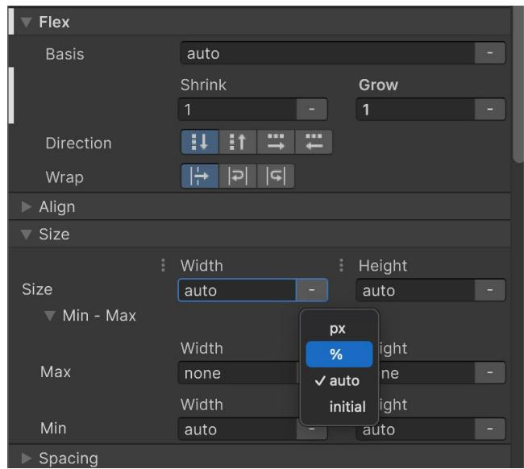
Size settings for a visual element
The Width and Height fields define the size of the element. The Max Width and Max Height limit how much it can expand. Likewise, the Min Width and Min Height limit how much it can contract. You can define the sizes in pixel units or percentages overriding the default auto. These impact how the Flex settings (below) can resize the elements based on available space.
The Flex settings can affect your element's size when using Relative positioning. It's recommended that you experiment with elements to understand their behavior firsthand.
Basis refers to the default Width and Height of the item before any Grow or Shrink ratio operation occurs:

Basis, Grow, and Shrink settings
The above example shows how Basis works with the Grow and Shrink options:
As you can see, elements that have a fixed size expressed in pixels (the blue box in 3–5) don't react to the Basis, Grow, or Shrink settings.
The layout engine combines the Size and Flexbox settings to determine how large each element appears when using Relative positioning. Calculating a visual element's size entails the following steps:
The Direction setting defines how child elements are arranged inside the parent. Child elements higher in the Hierarchy menu appear first. Elements at the end of the Hierarchy appear last.
The Wrap setting tells the layout system whether elements should try to fit into one column or row (No Wrap). Otherwise, they appear in the next row or column (Wrap or Wrap reverse).
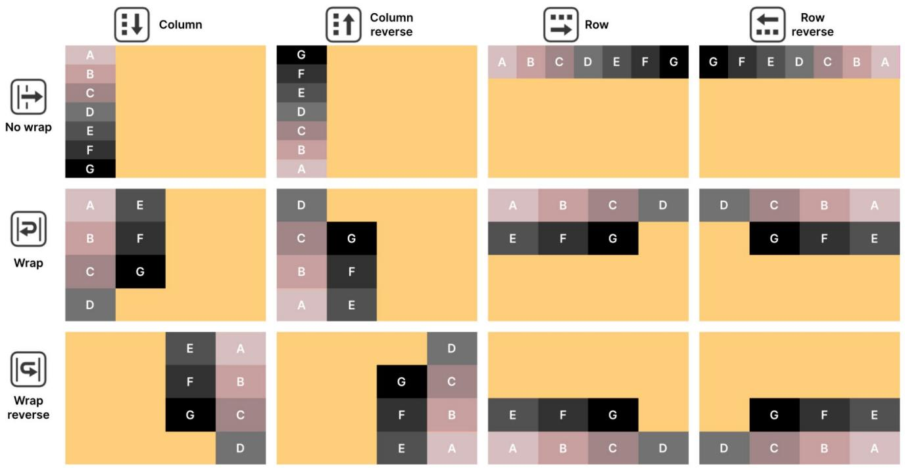
Parent and child visual elements in UI Builder, using Relative positioning and different Direction and Wrap combinations
The Align settings determine how child elements line up to their parent element. Set the Align > Align Items in the parent to line up child elements to the start, center, or end. These options affect the cross-axis (perpendicular to the row or column in the Flex > Direction).
The Stretch option also works along the cross-axis, but the Min or Max values from the size can limit the effect (this is the default). Meanwhile, the Auto option indicates that the layout engine can automatically choose one of the other options based on other parameters. It's recommended that you select one of the options for more control over the layout, and mainly use the Auto option for special use cases.
Go to Align > Justify Content to define how the layout engine spaces child elements within the parent. These elements can line up, adjacent to one another, or spread out using the available space. The Flex > Grow and Flex > Shrink settings influence the resulting layout.

Align and Justify settings applied to a parent element with a Direction set to Row; note that other position and sizing options can affect the final output
The Align Self option allows the container to align itself to the center, end, or start position of the flex layout
Use the Margin and Padding settings to define empty spaces around your visual elements and their content. Unity uses a variation of the standard CSS box model, similar to the diagram below.
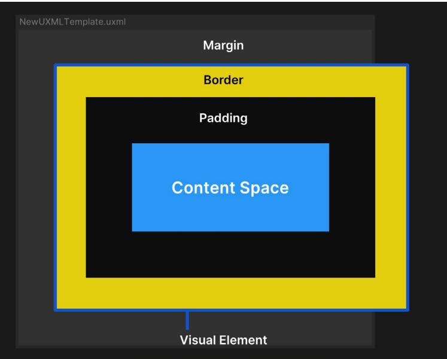
A visual element in UI Builder with defined Size, Margin, Border, and Padding settings; elements with a fixed Width or Height can overflow the space
In UI Toolkit, any visual element can be used to display an onscreen image. Simply set the background property to show a texture or sprite.
You can fill in a color or image to change the element's appearance. This is helpful for wireframing. Bright colors with contrast can show how different elements look next to one another and respond to changes in their containers.
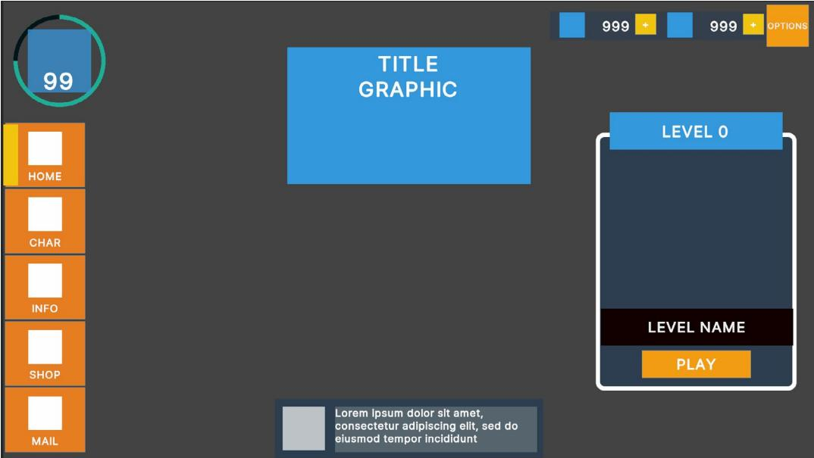
Use contrasting colors during wireframing.
In UI Builder, you'll encounter four parameters that define the distance and size of elements:
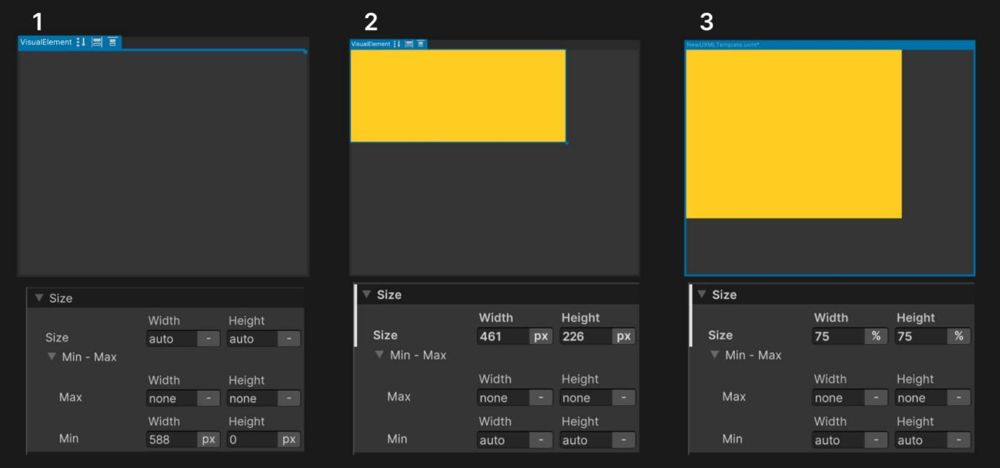
Examples of the default Size settings and Sizes defined in pixels and percentages
If you want to apply a scaling rule to the entire UI at the same time, you can do so in the Panel Settings under the Scale Mode parameters:
— Scale with Screen Size: This option resizes elements dynamically based on resolution. Screen Match Mode determines whether scaling prioritizes width, height, or a blend of both. The Reference Resolution sets the UI's base size. When Screen Match Mode is set to Match Width or Height, the Match value controls whether the UI system scales the UI to match the screen width, the screen height, or a mix of the two.
| Inspector | ਹੈ | |
|---|---|---|
| Panel Settings (Panel Settings) | 8 T | |
| Open | ||
| Theme Style Sheet | UnityDefaultRuntimeTheme (Theme Style Sheet) | 0 |
| Text Settings | None (Panel Text Settings) | O |
| Binding Console Logs | No logs | > |
| Target Texture | None (Render Texture) | O |
| Target Display | Display 1 | > |
| Force Gamma Rendering | ||
| Sort Order | 0 | |
| Scale Mode | Constant Pixel Size | |
| T Scale Mode Parameters | V Constant Pixel Size | |
| Scale | Constant Physical Size | |
| Reference Sprite Pixels per Unit | Scale With Screen Size | |
| Dynamic Atlas Settings A |
||
| Clear Settings > |
||
| > Buffer Management |
In the Panel Settings of UI Toolkit, you can find similar scaling options to the ones found in Unity UI.
Modified properties will be highlighted in the Inspector with a bold font and white line next to them as shown in the screenshot below. This indicates that they are overriding default values or values in the selector in the style sheet or USS of the selected UXML file. This behavior is also referred to as "inline styling". If a value doesn't need to be modified, it's best to leave it in its default state to make changes easier to find and manage. To reset a property to its default value, you can use the option available in the dots (⁝) menu next to the property section.
| Background | |||
|---|---|---|---|
Color |
|||
| Add binding | 0 | Texture ▼ | |
| Extract Inlined Style to Selector | > | ||
| Extract All Inlined Styles to Selector | > | Height | |
| Set as inline value | 100 | % | |
| Unset | OX | ||
| Unset all | |||
| 1 VOIVIN | px | ||
| Scale Mode |
From this menu you can restore the modified values to the default ones or the ones originally in the selector.
UXML files can be used similar to prefabs. For example, you could have a project with a UXML layout that contains an item icon and count number that you need to spawn many times inside an inventory. If you right click on any UXML you get the option to create a Template, which can later be added to any other visual element in the Hierarchy pane or instantiated from code. Once created you can find it in your Library and Project view.
| Hierarchy | ||||
|---|---|---|---|---|
| test.uxml | Library | |||
| #button-accept | Copy Paste Rename Duplicate Delete Create Template Add selector |
Standard Project Q. Search Ul Documents (UXML) V Assets button-accept.uxml < test.uxml Custom Controls (C#) # TabbedView TabButton |
U | 01:4 |
| Library Standard Project |
Templates are reusable UXML and are available in the Library pane in the Project tab.
Learn more about the Flexbox layout engine with the following resources. As Flexbox and Yoga are existing standards in web and app development, there will be a variety of resources available online.

Changing style properties directly in UI Builder
Once you've mocked up some wireframe layouts with visual elements, you can begin styling them or saving the formatting properties into reusable styles. Styling is where UI Toolkit exhibits its full power.
Adding style to visual elements is preferably done via Unity style sheet (USS) files (Assets > Create > UI Toolkit > StyleSheet). They are the Unity equivalent to web CSS files, and use a similar rule-based format. They also add flexibility to the design process making it easy to reuse and styles consistent across the project at scale.
USS files define the size, color, font, spacing, borders, or location of elements.
If you haven't created a USS file yet, all the styling changes you make will be embedded directly in the UXML asset as inline styles. While these inline styles affect the appearance of the specific visual element they are attached to, they cannot be reused across your project.
For example, if your project has hundreds of buttons, updating the style of each individual button would be time-consuming and inefficient. Instead, you can define a selector in a USS. USS selectors make it possible for style sheets in UI Builder to share and apply styles across many elements in UXML assets.
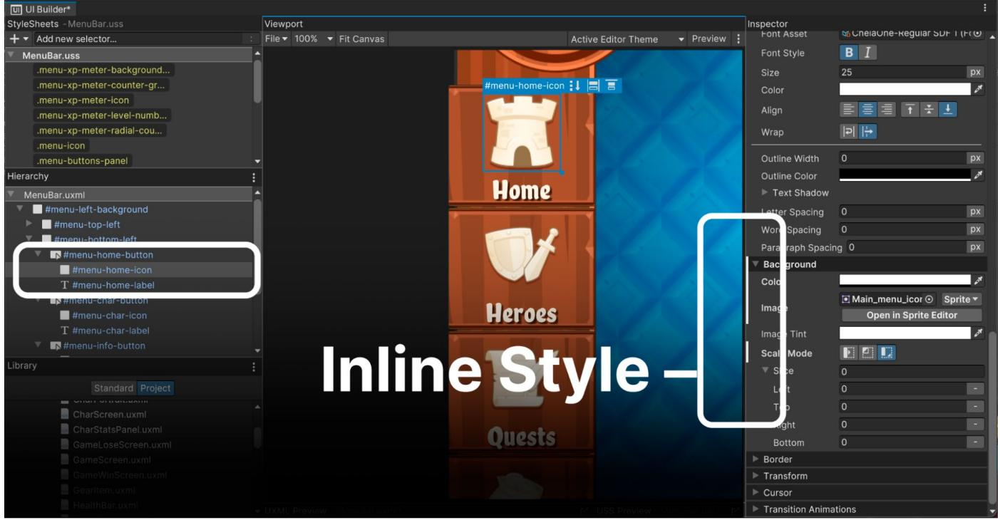
Inline styles are overrides.
Use the Add Style Class to List button to type and convert all the inline styles of an element to a selector (starting with "." in yellow). This selector now centralizes the styling properties, allowing you to apply consistent styles to other buttons (or other elements) throughout the project. Any updates made to the selector will automatically reflect on all associated elements, making the process scalable and maintainable.
| StyleSheet | |||
|---|---|---|---|
| V Style Class List | |||
| button-glossy-green | |||
| Add Style Class to List | |||
| Extract Inlined Styles to New Class | |||
| .unity-text-element .unity-button | |||
| > Matching Selectors |
Extracting all Inline Style properties to a selector
To extract specific inline styles to a new selector, click on the vertical ellipsis (⁝) next to the property, and select Extract Inlined Style to Selector / Add Class, which turns that property into a selector.

Extracting property's Inline Style to a selector
Selectors query the visual tree for any elements that match a given search criteria. UI Toolkit then applies style changes to all matching elements. You can add a new selector by clicking on the field Add new selector… in the top left side of UI Builder:
| Ul Builder* | |||||
|---|---|---|---|---|---|
| StyleSheets | Viewport | ||||
| +▼ 11-1 |
File ▼ 25% Fit viewport ) |
||||
| Selector Type | Example | ||||
| Click the + icon to create a new StyleSheet. | Element C# type | Button | |||
| Name or ID | #exampleID | ||||
| Style class | .styleClassName | ||||
| Direct child | .parentClassName > .directChildClassName | ||||
| Hierarchy | Child at any depth | .parentClassName .childClassName | |||
| test.uxml* VisualElement |
▲ | Mouse over only | .styleClassName :hover | ||
| T Label | Focus only | .styleClassName :focus | |||
| VisualElement VisualElement |
Selector types listed from least to most specific. Learn more | ||||
| ScrollView | V | Example | |||
| Library | Button.yellow:hover Label#foo | ||||
| Standard Project |
Match on all Labels named #foo inside any Buttons that have the .yellow style class and have the mouse currently :hovering |
||||
| Q- Search | over them. | ||||
| Containers | |||||
| D T |
USS selector reference when creating a new selector
USS selectors can match visual elements by:
Note: UXML name attributes (unlike HTML IDs) don't need to be unique because UI Toolkit supports UXML templates and reusable components, allowing multiple elements to share the same name and style.
— Style class: A Style Class selector is a reusable style that can be applied to any visual element by adding the corresponding class name to the element's Class List property. Style Class selectors have a preceding dot "." character and appear in yellow. For example, .smallFont could be used to apply a specific style to any element by adding smallFont to its Class List.
Note: Avoid overly broad selectors when possible (especially those ending in * or targeting generic Unity classes like .unity-button). Deep child selectors can potentially slow down performance if they evaluate a large portion of the visual tree.
— Pseudo-class: Pseudo-classes allow you to define distinct styles for visual elements when they change state, such as when the mouse hovers over them or when they are focused. Pseudo-classes are denoted by a colon ":" and modify existing selectors.
For example, the selector Button :focus would apply specific styles to all Button elements when they are focused. This makes pseudo-classes useful for adding visual feedback, such as hover effects or focus indicators. Additionally, combining pseudoclasses with USS animations enables you to introduce smooth motion and dynamic transitions, enhancing the user experience.
You can read about the pseudo-classes available here.
If a visual element matches multiple selectors, the selector with the highest specificity takes precedence.
The specificity hierarchy in USS is as follows:
For example, if an element has both an inline style and matches a #title ID selector, the inline style will override the ID selector. Similarly, if the element matches both a Class selector and a Type selector, the Class selector will take precedence.
In the case of a tie, where several selectors are trying to override the same property and all have the same level of specificity, the tie breaker will be the order in the USS style sheet, selectors lower in the list will take precedence.
You can learn more about selector precedence in the documentation.
Click the vertical ellipsis (⁝) in the Hierarchy header to further visualize the UI elements.
| Hierarchy | |
|---|---|
| OptionsBar.uxml VisualElement #options-bar .options-bar |
· Type < Class List √ Attached StyleSheets |
Filter for different selectors in the Hierarchy.
In the Hierarchy pane, additional information appears next to the element Type. The #options-bar Name selector and .options-bar Style Class selector appear when checked.
You might notice that some selectors begin with the .unity- prefix. These are default styles that apply to all elements. Any defined selectors will override these values.
In the Inspector, you can visualize the matching selectors of a selected element in the Hierarchy. The selector at the bottom of the list has precedence. Unfold the details to see which style parameters are changing.
| Style Class List | ||
|---|---|---|
| Add Style Class to List | ||
| Extract Inlined Styles to New Class | ||
| unity-text-element unity-button green-button | X | |
| Matching Selectors A .unity-button .unity-button 2 .unity-button D Button .green-button A #button-play > |
||
| background-color rgb(255, 139, 59) |
A selected visual element shows its matching selectors in the Inspector.
When modifying a Style selector, be sure to select the Style Class in the Style Sheet panel – not the visual element from the Hierarchy. Otherwise, you will change the inline style for a specific element and not the Style Class itself.
| UI Builder | ||||||||||
|---|---|---|---|---|---|---|---|---|---|---|
| Inspector | StyleSheets - MenuBar.uss | Viewport | ||||||||
| itor Theme | - Preview : | Button | - - Add new selector | File ▼ 175% | > | Fi | ||||
| Name View Data Key Picking Mode Tooltip Usage Hints Tab Index Focusable Binding Path Text Enable Rich Text ✔ Display Tooltip When Elided ✔ StyleSheet V Style Class List |
menu_home-button Position None 0 > Add Style Class to List |
.menu_current-marker .menu_button .menu_button :active .menu_button :hover .menu_button--active .menu_background .menu_icon .menu_icon-active .xp-meter_background .xp-meter_counter-group |
▲ | |||||||
| Extract Inlined Styles to New Class | .xp-meter_icon | |||||||||
| .unity-text-element .unity-button .menu_button--active x | .xp-meter_level-number | V | ||||||||
| D | .cursor-b x V Matching Selectors > .unity-button Lunity-button > .unity-button Button > .menu_button -- active > . cursor-b |
Double-click to select and edit USS selector. | Hierarchy | MenuBar.uxml T #menu_background #level-meter #menu_button-group > #menu home-button |
Double-click the Style Class in the Inspector to ensure it's active.
You can double-click a Style Class in the Inspector to deselect an element and select the Style selector instead.
Just like when you were modifying parameters as inline styles directly in the UXML, you can edit parameters in the selectors, by selecting them in the StyleSheets pane, and modifying with overrides. The changes will also show as bold with a white line next to them. To unset a value you can do it from the vertical ellipsis (⁝) menu next to the property.
| StyleSheets -usstest.uss | : Viewport | Inspector | |
|---|---|---|---|
| + ▼ Add new selector | File ▼ 25% ▼ Fit viewport Unity Default Runtime Th | Selector | |
| T usstest.uss* | test.uxml | () | #VisualElementTest > Label |
| #VisualElementTest #VisualElementTest > Label |
Left | 0 | |
| 0 | |||
| Label | Top | ||
| Right | 0 | ||
| Bottom | 0 | ||
| Slice Scale | . 1 px |
||
| Hierarchy | Border | ||
| test.uxml* | px - 0 40 0 |
0 40 40 40 0 |
|
| Library Standard Project |
|||
| Q. Search | > Color | ||
| Containers | ► Width | 40px | |
| =I | ► Radius | Opx |
Editing a USS selector

With numerous formatting options available, you can modify the basic appearance of elements and fonts. UI Toolkit offers advanced styling that can reduce the need for custom-made sprites.
UI Builder can facilitate adding outlines, rounded corners, image adjustments, and border colors to your elements. Styling can also include bevel effects and the ability to change the cursor image.

UI Toolkit offers several styling effects that do not require additional textures.
Rules were meant to be broken. Whenever you define a style class for UI elements, there will always be exceptions.
For example, if you have hundreds of Button elements, but each one has a different icon you don't need to create a new selector for each one. This would defeat the purpose (convenience) of making styles reusable.
In lieu of this, you'd apply the same style to all of the buttons and then override the specific parts of each one that are unique (e.g., each Button element could override the Background > Image to use its own icon). These Overrides are the Inline style properties.
Inline styles always take precedence over selectors. So if you're unsure as to why a style is not updating when a selector is applied, it could be helpful to check the element to see if there are any Overrides.

You can create USS variables to save time manually setting up the same values in different properties. When you update a USS variable, all of the USS properties that use that variable update. In Unity 6.1 these variables can also be set up from the UI Builder Editor.
| Ul Builder* | ||||||||
|---|---|---|---|---|---|---|---|---|
| StyleSheets -Buttons.uss | Viewport | Inspector | ||||||
| - - - Add new selector | File ▼ 75% ▼ Fit viewport |
Bu | ||||||
| Buttons.uss* | Selector | |||||||
| Button | .button-accept | |||||||
| .button-accept | Styles | |||||||
| .label-normal :hover | V Variables | |||||||
| .label-normal | margins-size | 10 | Float | |||||
| .label-normal :disabled |
- | 450 | Dimension ▼ | |||||
| .unity-disabled :disabled | square-size | X | ||||||
| .unity-tab | V | sprite | の C cog |
Sprite ▼ | AssetRefere® | |||
| Hierarchy | ಿ ಕೆಡ | Open in Sprite Editor | ||||||
| test.uxml* | + | |||||||
| ▼ #button-accept button-accept.uxm | ▼ Display | |||||||
| #button-accept |
Variables in the USS selectors are available for creating and editing in UI Builder in Unity 6.1
| Width | -- Height | |||||||
|---|---|---|---|---|---|---|---|---|
| S | --unity-font-button-padding-top | Editor Only | ||||||
| -- unity-font-button-padding-bottom | Editor Only | |||||||
| -- unity-metrics-default-font_normal_size | Editor Only | |||||||
| -- unity-metrics-default-font_semi_small_size | Editor Only | |||||||
| -- unity-metrics-default-font_tiny_size | Editor Only | |||||||
| -- unity-metrics-default-font_small_size | Editor Only | |||||||
| -- unity - metrics - default - font_big_size | Editor Only | |||||||
| -- unity - metrics - default - font_very_big_size | Editor Only | |||||||
| -- unity-metrics-default-border_radius | Editor Only | |||||||
| -- margins-size | Editor Only | |||||||
| -- square-size | Editor Only | |||||||
| 11 found | ||||||||
| Name: | -- square-size | |||||||
| Value: 450px |
||||||||
| Stylesheet: | Buttons.uss | |||||||
| Top | 0 | DX | ||||||
| 12 | DX | |||||||
| Set variable | 12 | px | ||||||
| Set as value | ||||||||
| Unset | px | |||||||
| Unset all | Opx | |||||||
You can create variables of the type: float, color, string, asset reference (for background images), dimensions (like pixels, degrees, percentage, etc) and enums. Variables have a selector level scope; you can't use variables present in other selectors, but selectors themselves can be applied to as many elements as needed.
Setting a variable in a property instead of introducing the value directly
Adding transitions to your menu screens can significantly enhance visual polish and user experience. UI Toolkit makes this relatively easy with the Transition Animations property in the Inspector.
You can configure the Property, Duration, Easing, and Delay to set up the animation. Once configured, the transition is automatically applied when the relevant styles change during runtime.
Think of the transition between pseudo-classes of a Button – the :hover pseudo-class over the .green-button Class selector. Each style has its own size and color.
To define a transition in the mouse hover state, the .green-button:hover selector has Transition Animations, located at the bottom of the Inspector. The result is a Button that animates with your pointer movements.

You can interpolate between styles with Transition Animations.
The Transition Animation interpolates between styles with the following options:
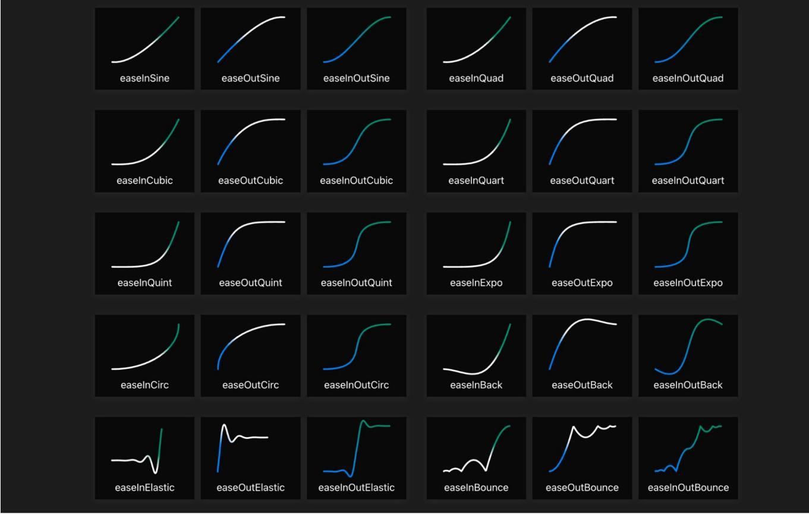
Use this cheat sheet to help you visualize the available functions (visualization courtesy of https://easings.net/).
Click the Add Transition button to chain another transition animation. This makes it possible to trigger several overlapping transitions at once, making them more natural and less mechanical.
Callbacks for transition events can be added to the visual elements being animated. They serve to support more advanced workflows, such as sequencing or looping.
Here are some common transition events with explanations for when they are sent:
Learn more about USS transitions in the documentation.
For visual elements, animations don't require additional code because pseudo-classes (:active, :inactive, :hover, etc.) can have their own selectors. Whenever a pseudoclass triggers a style change, any defined transitions will automatically animate the change. For example: A button can grow or shrink when hovered (:hover), clicked (:active), or elements can fade out or become invisible based on user interaction or other events.
Pseudo-classes are predefined and you can't make your own.
For any other events in your game you can also change styling in code using methods from the UI Element APIs. For example, for changing to a different styling based on a character rarity, you can use the RemoveFromClassList and AddToClassList methods.

You can additionally trigger the pseudo-class :active or :inactive, which is based on the enabled state of the visual element, to have USS transitions when changing state. This way, they can represent the before and after states.

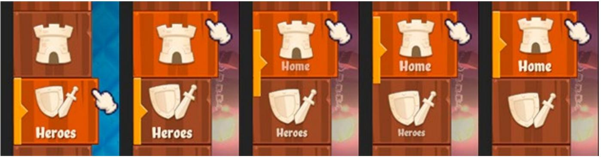
The menu bar buttons in UI Toolkit Sample – Dragon Crashers uses a PointerEventClick to trigger some manual transitions.
More complex visual elements, for example, a Tab view, are made of a parent element with children that are predefined by the system. They behave in a particular way when you add content to these elements and the styles used appear to be disabled and Unitymade. You can override any of these default selectors by double-clicking on the selector in use and make a copy to edit in your style sheet or USS.
| StyleSheet 11 |
|
|---|---|
| T Style Class List | |
| Add Style Class to List | |
| Extract Inlined Styles to New Class | |
| .unity-tab | |
| .unity-tab | ab |
| Double-click to create new USS selector. ab | |
| > .unity-tab-view .unity-tab:checked | |
| > .unity-tab-view .unity-tab:checked |
If you want to make a seasonal version of the UI or offer different color styles, Theme Style Sheets (TSS) can simplify this process. Create a TSS via Create > UI Toolkit > TSS theme file.
TSS files are Asset files that operate like regular USS files. They provide a starting point for defining your own custom theme, made of USS selectors as well as Property and Variable settings.
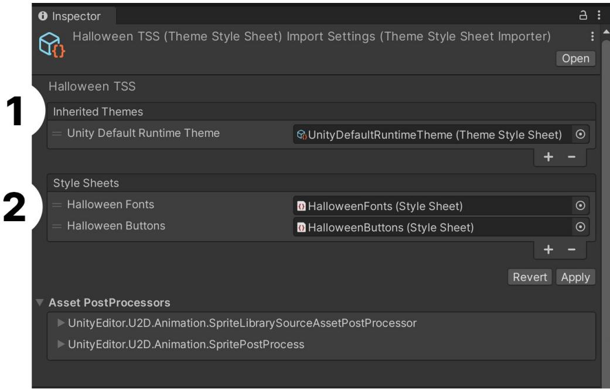
In this example of Halloween-themed UI elements, the Halloween TSS first inherits from the Unity Default Runtime TSS, then it adds themespecific style sheets for Fonts and Buttons.
Inherited themes mean that if there are style sheets with selectors missing in the new theme, compared to the original one, then the latter's styling will be applied. This makes customization easier. For example, you could create a new theme that only modifies fonts, while leaving the rest of the UI (such as colors, padding, or borders) styled according to the original theme. This approach is useful for scenarios like implementing light/dark mode, per-character UI customization, or creating game-specific event themes.
| பி Builder | |||||||||
|---|---|---|---|---|---|---|---|---|---|
| StyleSheets - Buttons.uss |
Viewport | ||||||||
| + ▼ |
Add new selector | : . | File ▼ 134% ▼ | Fit viewport | Halloween-theme ▼ | Preview | |||
| Buttons.uss | test.uxml | ||||||||
| Button | |||||||||
| .button-accept | |||||||||
| T Halloween-buttons.uss | |||||||||
| VisualElement | 0 . | ||||||||
| Hierarchy | |||||||||
| 2 | test.uxml | ||||||||
| #button-accept |
The TSS for the Halloween theme represented in this screenshot uses the Halloween-buttons.uss but there's no matching selector for the button's in-use selector .button-accept, so it uses the one applied in the original theme.
A workflow to create new themes based on existing ones could be:

Choose which theme you want to apply in the UI Builder viewport.
For runtime, reference your new theme in the Theme Style Sheet field of the Panel Settings Inspector.
With UI Toolkit you'll need to query the visual elements and USS using a string identifier, so using a defined set of standards will lead, overall, to fewer errors and more readable code.
As dev teams will refer to the same UXML and USS assets that make up your interface, it's important to standardize naming conventions for both visual elements and style sheets. Naming conventions help keep your hierarchy organized in UI Builder. It will also take out the guesswork of coding conventions and formatting conventions and help you have a consistent codebase.
The name of visual elements is used to store references to them in the code.
There is no one-size-fits-all style guide. Pick and choose what works best for your team and project. However, it's generally recommended to stick as close to industry standards as possible. For that reason, we recommend the Block Element Modifier (BEM) naming convention for your visual elements and style sheets. BEM is widely used in the context of CSS and modern web development, from which UI Toolkit takes its inspiration.

At a glance, an element's BEM-style name can tell you what it does, where it appears, and how it relates to other elements around it. BEM uses three main components in the following convention:
block-name__element-name--modifier-name
Here's an example:
navbar-menu__shop-button--small
Each name part may consist of Latin letters, digits, and dashes. Also note that each name part is joined together with either a double underscore __ or a double dash --. Let's look at the three components in detail:
If your new element instantiates child elements in its constructor, assign the relevant classes to the children. For example, my-block__first-child, my-block__otherchild.
— Finally, the modifier indicates a variation or state of a block or element. That could be when a button is pressed, a textbox item is selected and highlighted, or in our example, when it's a small variant of the shop button. This makes it easy to adapt to different scenarios without duplicating code.
Here are some more examples of BEM naming:
BEM class names are self-descriptive, making it easier for developers to understand the structure and purpose of components and therefore, helping to maintain a clear hierarchy for managing and updating styles as projects grow. As a general rule of thumb, favor readability over brevity. Clarity is more important than any time saved from omitting a few vowels.

These examples use hyphen delimiting (aka Kebab case), which is common for CSS naming. Your team should decide early on in a project which naming scheme works best for them and stick to it throughout development.
Read more about CSS naming conventions in this article, as well as in the UI Toolkit documentation.
Here are some guidelines for effective naming:

If you or your team wants to refine key coding practices to make your project more scalable, check out our free e-book, Create a C# style guide: Write cleaner code that scales. Use this guide as needed to help standardize your code style and naming conventions.
UI Toolkit uses TextCore, a font rendering technology originally based on TextMesh Pro (which is used by the legacy UI system, Unity UI). TextCore offers advanced styling capabilities and can render text cleanly at various point sizes and resolutions. It takes advantage of Signed Distance Field (SDF) font rendering, which can generate font assets that look crisp even when transformed and magnified. You can get the details of the different rendering modes for TextCore in the documentation.
Let's look at the different font asset types and what they are used for.
The most common font formats, TTF and OTF files, need to be converted into font assets before they can be used in your Unity project. A font asset is a Unity-specific resource that contains the data required to render a font including character glyphs, font metrics, and rendering configurations like size, weight, and style. The imported source file shows information on each font family and their rendering options.
| Inspector* | a : | |||||
|---|---|---|---|---|---|---|
| HVD Fonts Mikado Black (Font) Import Settings * | 11 | |||||
| Open | ||||||
| Font Size | 16 | |||||
| Rendering Mode | Smooth | > | ||||
| Character | Dynamic | A | ||||
| Ascent Calculation Mode | Face ascender metric | A | ||||
| Use Legacy Bounds | ||||||
| Should Round Advance Value | > | |||||
| Include Font Data | > | |||||
| Family Name | Mikado | |||||
| Font Names | ||||||
| Size | ||||||
| Element O | Mikado | |||||
| T References to other fonts in project | ||||||
| These are automatically generated by the inspector if any of the font names you supplied match fonts present in your project, which will then be used as fallbacks for this font. |
||||||
| AaHVD Fonts MikadoRegularItalic | 0 | |||||
| Aa HVD Fonts MikadoReqular | O | |||||
| AaHVD Fonts MikadoLight | O |
Many of these import options are remnants of the legacy text system in Unity UI. There are plans to remove them in future releases. Rendering Mode, Character, and Include Font Data are used for generating the Font Asset
To generate corresponding font assets, select the source font file and then right-click on the Assets menu and generate via Create > Text Core > Font Asset > SDF (if SDF is your preferred rendering mode).
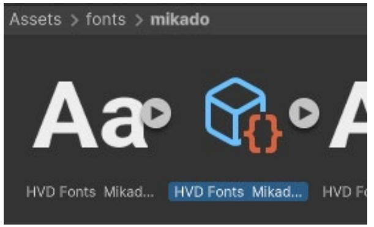
Different UI systems use different font assets.
Once you have the source font file converted, select the font asset and you'll find all of the options to give you full control over the font generation. Let's look at some key options here (read more about font assets in the documentation):
— Face Info: Spacing and scaling options for your font to adjust parameters that can better suit your application if the default source font required tweaks


— Glyph Adjustments: Defines overrides per character or glyph
Source fonts and atlases can increase the build size: On the left is an atlas with ASCII characters and on the right is an atlas of a complete Unicode character set.
At the top of the Inspector, when selecting a font asset, you'll find the Font Asset Creator under the Update Atlas Texture button. It gives you all the control to populate and define atlas properties.

Characters in the Font Texture need some padding between them (specified in pixels) so they can be rendered separately. Padding also creates room for the SDF gradient. The larger it is, the smoother the transition, which allows for high-quality rendering and effects like thick outlines.
If you are only using ASCII characters, an atlas resolution of 512 x 512 with a padding of 5 is sufficient for most fonts. Fonts with more characters might need larger resolutions or multiple atlases. As a general rule, aim for the padding size to be at a 1:10 ratio with the sampling size.
To make changes without employing a new font atlas, create a font asset variant via Create > Text Core > Font Asset Variant. This variant can hold an alternate version of the font's line metrics.
The variant stores its own Face Info settings – think line height and subscript position – but still refers to the original atlas. As such, it can have its own styling, distinct from the original Font asset, without consuming extra space for textures.
Rich text tags alter the appearance and layout of text through the use of supplemental tags in the text field. You can use rich text tags with both visual elements in code UI Builder. The tags enable text to be formatted at runtime, for example, to customize the appearance of a username.
Rich text tags can change the color or alignment of text without modifying its properties or styling. Use them to format the text in a dialogue system or visually reinforce what you want to communicate.
Go to Extra Settings to enable the rich text feature in UI Builder. Doing so will format your text (including tags) appropriately. For instance, text between the and closing tags will show up as bold.

Enable rich text tags in UI Builder to make the tags modify your visual text properties.
Check out this complete list of available rich text tags and parameters.
Gradients add stylization throughout the interface; in UI Toolkit you can apply them via the
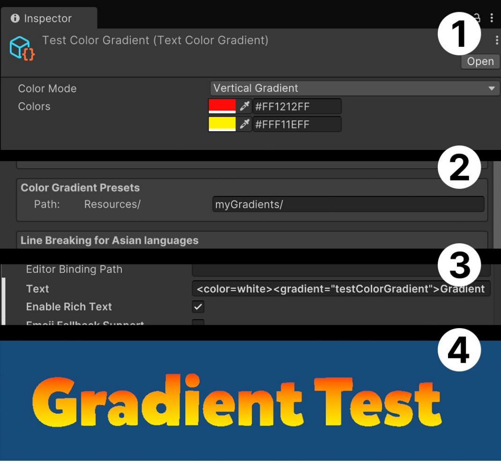

You can include sprites like emojis in your text via rich text tags. To use them, you'll need to use a Sprite asset similar to the Gradient asset.
When importing multiple sprites, pack them into a single atlas to reduce draw calls. Make sure that the sprite atlas has a suitable resolution for your target platform. Return to the asset preparation section for more on sprite resolutions.

A common use case for sprite assets are emojis or icons integrated into text strings.
Follow these steps to import sprites for this purpose:
Note: In this context, Update Sprite Asset syncs the Sprite asset to the latest Sprite Editor changes.
To use this asset with UI Toolkit, you must follow the same step as you did with gradients:
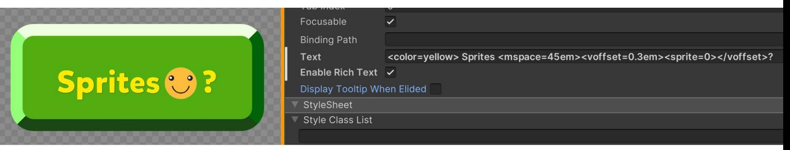
Add a Sprite Asset to a text field in UI Toolkit using rich text tags: Make sure that the Enable Rich Text option is checked (top).
If you are targeting a specific runtime platform, such as iOS or Android, you can make use of the system's built-in emoji font instead of including the source font in your project. This can save memory and eliminate the need to package a large collection of emojis with your application. They are also often a great fit for Global Fallbacks in Text Settings.
| Generation Settings | ||||||||
|---|---|---|---|---|---|---|---|---|
| rce Font File | 0 Aa Annle Color Fmoii |
|||||||
| Face | Static | |||||||
| Population Mode | Dynamic | |||||||
| Atlas Render Mode | V Dynamic OS | |||||||
| Sampling Point Size | 90 | |||||||
| Padding | 9 | |||||||
| Atlas Width | 1024 | |||||||
| Atlas Height | 1024 | |||||||
| i Atlas Textures | ||||||||
| 2 Alla | 1024 | |||||||
| Atlas Height | 1024 | |||||||
| Multi Atlas Textures | ||||||||
| Clear Dynamic Data On Build | ||||||||
| Get Font Features | ||||||||
| 3 | Focusable | |||||||
| Language Direction | Inherit | |||||||
| moji font: | Editor Binding Path | |||||||
| Text Enable Rich Text |
OS Emoji font: \n \U0001F601 \U0001F973 \U0001F64A > |
|||||||
| Emoji Fallback Support | > | |||||||
| Parse Escape Sequences Selectable |
> 1 |
|||||||
| Double Click Selects Word | V | |||||||
| blank new | ||||||||
| OS Emoji font: | ||||||||
| 1 - 2 - 6 - | ||||||||
| emojiOS_test Info | Apple Color Emoji.ttc Info | |||||||
| Apple Color Emoji.ttc 188,5 MB |
||||||||
| emojiOS_test Modified: Today, 11.53 |
127,7 MB | A Modified: Saturday, 7 December 2024 at 09.11 | ||||||
| Add Tags | ||||||||
| Add Tags | General: | |||||||
| General: | Kind: TrueType® font collection | |||||||
| Size: 188.489.720 bytes (188,5 MB on disk) |
These are the steps to use OS emojis in your project:
If your application deals with a significant amount of text, you might want to consider creating a text style sheet to manage its formatting. This lets you create custom text styles with the